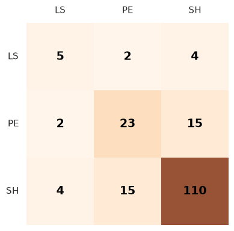
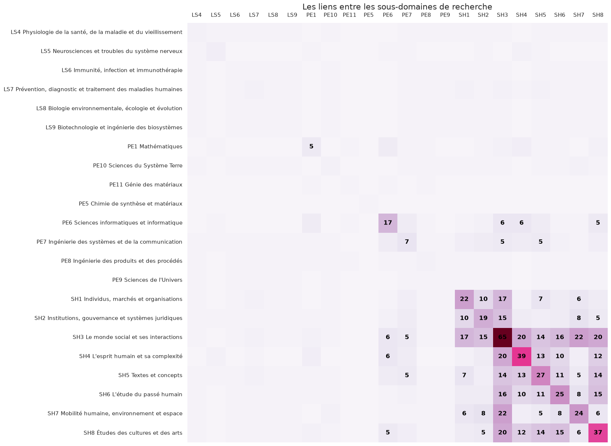
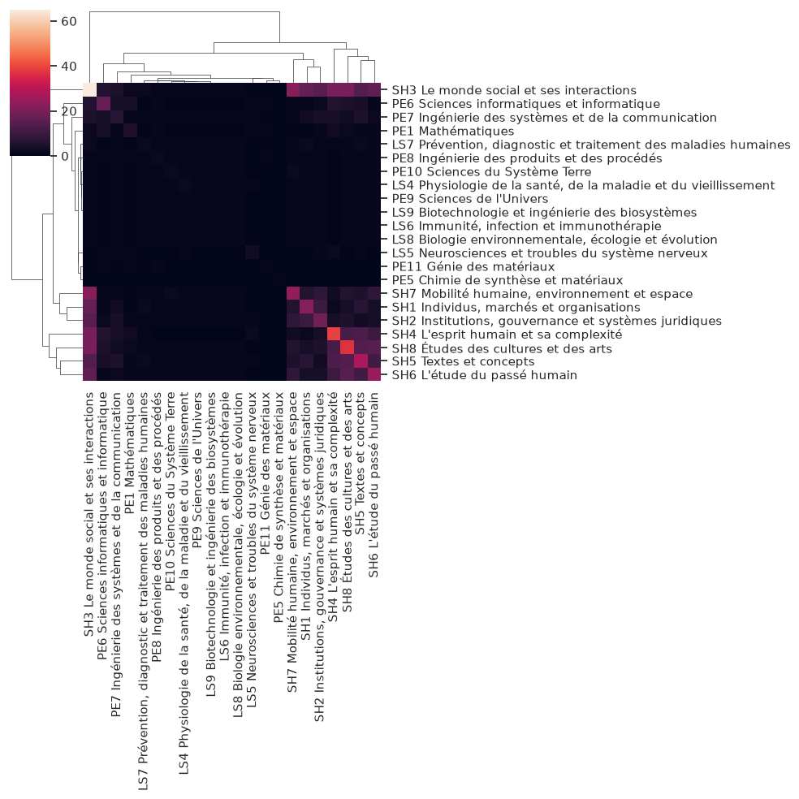

Profils des enquêtés#
Les statuts représentés#
Les personnes ayant répondu à l’enquête sont majoritairement des enseignants-chercheurs ou des chercheurs (87%), 10% d’entre elles sont des doctorants, tandis que les personnels d’appui à la recherche (ingénieur d’étude et de recherche) représentent 3% de l’effectif total.
q25_statut_rec |
nb |
freq |
|---|---|---|
Chercheur |
104 |
87,4 |
Doctorant |
12 |
10,1 |
Personnel d’appui à la recherche |
3 |
2,5 |
Total |
119 |
100,0 |
Cultures épistémiques#
Les laboratoires et les UFR représentés#
dfgb = df_rf.groupby(["q45_clé"]).agg(nb = ("q24_research_domain","size")).sort_values("nb", ascending=False).reset_index()
dfgb2 = df_rf.drop_duplicates(subset=["q45_clé","q24_research_domain"]).groupby(["q45_clé"]).agg(nb = ("q24_research_domain","size")).sort_values("nb", ascending=False).reset_index()
np.quantile(dfgb.nb, q=(0.25,0.75))
(len(dfgb)+1)/2
df_rf["nb_subdomain"]= df_rf.q45_clé.map(dict(zip(dfgb.q45_clé, dfgb.nb)))
df_rf["nb_domain"]= df_rf.q45_clé.map(dict(zip(dfgb2.q45_clé, dfgb2.nb)))
df_rf.loc[(df_rf.nb_domain>1) & (df_rf.nb_subdomain>1) & (df_rf.q24_research_domain=="Sciences sociales et humaines")]
#len(df_rf.loc[(df_rf.nb_subdomain==1)].drop_duplicates("q45_clé"))
| q45_clé | q24_research_fields | q24_research_domain | value | nb_domain | nb_subdomain | |
|---|---|---|---|---|---|---|
| 8 | CN6B-UEHQ | SH3 Le monde social et ses interactions | Sciences sociales et humaines | 1 | 2 | 4 |
| 8 | CN6B-UEHQ | SH5 Textes et concepts | Sciences sociales et humaines | 1 | 2 | 4 |
| 10 | 5G5M-BM3L | SH3 Le monde social et ses interactions | Sciences sociales et humaines | 1 | 2 | 5 |
| 10 | 5G5M-BM3L | SH4 L'esprit humain et sa complexité | Sciences sociales et humaines | 1 | 2 | 5 |
| 10 | 5G5M-BM3L | SH8 Études des cultures et des arts | Sciences sociales et humaines | 1 | 2 | 5 |
| 18 | ZGPH-2FPH | SH3 Le monde social et ses interactions | Sciences sociales et humaines | 1 | 2 | 7 |
| 18 | ZGPH-2FPH | SH4 L'esprit humain et sa complexité | Sciences sociales et humaines | 1 | 2 | 7 |
| 18 | ZGPH-2FPH | SH5 Textes et concepts | Sciences sociales et humaines | 1 | 2 | 7 |
| 18 | ZGPH-2FPH | SH6 L'étude du passé humain | Sciences sociales et humaines | 1 | 2 | 7 |
| 18 | ZGPH-2FPH | SH7 Mobilité humaine, environnement et espace | Sciences sociales et humaines | 1 | 2 | 7 |
| 18 | ZGPH-2FPH | SH8 Études des cultures et des arts | Sciences sociales et humaines | 1 | 2 | 7 |
| 27 | RVX8-7FSV | SH8 Études des cultures et des arts | Sciences sociales et humaines | 1 | 2 | 2 |
| 31 | TSZM-D83G | SH3 Le monde social et ses interactions | Sciences sociales et humaines | 1 | 2 | 5 |
| 31 | TSZM-D83G | SH4 L'esprit humain et sa complexité | Sciences sociales et humaines | 1 | 2 | 5 |
| 31 | TSZM-D83G | SH6 L'étude du passé humain | Sciences sociales et humaines | 1 | 2 | 5 |
| 31 | TSZM-D83G | SH8 Études des cultures et des arts | Sciences sociales et humaines | 1 | 2 | 5 |
| 42 | QH7Q-PJZ9 | SH3 Le monde social et ses interactions | Sciences sociales et humaines | 1 | 2 | 5 |
| 42 | QH7Q-PJZ9 | SH4 L'esprit humain et sa complexité | Sciences sociales et humaines | 1 | 2 | 5 |
| 42 | QH7Q-PJZ9 | SH8 Études des cultures et des arts | Sciences sociales et humaines | 1 | 2 | 5 |
| 45 | VR4Q-ZFTH | SH1 Individus, marchés et organisations | Sciences sociales et humaines | 1 | 2 | 7 |
| 45 | VR4Q-ZFTH | SH2 Institutions, gouvernance et systèmes juri... | Sciences sociales et humaines | 1 | 2 | 7 |
| 45 | VR4Q-ZFTH | SH3 Le monde social et ses interactions | Sciences sociales et humaines | 1 | 2 | 7 |
| 45 | VR4Q-ZFTH | SH4 L'esprit humain et sa complexité | Sciences sociales et humaines | 1 | 2 | 7 |
| 45 | VR4Q-ZFTH | SH5 Textes et concepts | Sciences sociales et humaines | 1 | 2 | 7 |
| 51 | Q3YA-587D | SH8 Études des cultures et des arts | Sciences sociales et humaines | 1 | 2 | 2 |
| 58 | 6454-S2QM | SH3 Le monde social et ses interactions | Sciences sociales et humaines | 1 | 2 | 2 |
| 74 | KBVW-94Y2 | SH7 Mobilité humaine, environnement et espace | Sciences sociales et humaines | 1 | 2 | 2 |
| 82 | 2DRU-P3AV | SH4 L'esprit humain et sa complexité | Sciences sociales et humaines | 1 | 2 | 2 |
| 86 | 3V5K-8FEA | SH1 Individus, marchés et organisations | Sciences sociales et humaines | 1 | 2 | 5 |
| 86 | 3V5K-8FEA | SH3 Le monde social et ses interactions | Sciences sociales et humaines | 1 | 2 | 5 |
| 86 | 3V5K-8FEA | SH4 L'esprit humain et sa complexité | Sciences sociales et humaines | 1 | 2 | 5 |
| 86 | 3V5K-8FEA | SH5 Textes et concepts | Sciences sociales et humaines | 1 | 2 | 5 |
| 89 | L755-EYSR | SH2 Institutions, gouvernance et systèmes juri... | Sciences sociales et humaines | 1 | 3 | 7 |
| 89 | L755-EYSR | SH4 L'esprit humain et sa complexité | Sciences sociales et humaines | 1 | 3 | 7 |
| 89 | L755-EYSR | SH5 Textes et concepts | Sciences sociales et humaines | 1 | 3 | 7 |
| 93 | 7CU7-JG8K | SH3 Le monde social et ses interactions | Sciences sociales et humaines | 1 | 2 | 6 |
| 93 | 7CU7-JG8K | SH4 L'esprit humain et sa complexité | Sciences sociales et humaines | 1 | 2 | 6 |
| 93 | 7CU7-JG8K | SH5 Textes et concepts | Sciences sociales et humaines | 1 | 2 | 6 |
| 93 | 7CU7-JG8K | SH6 L'étude du passé humain | Sciences sociales et humaines | 1 | 2 | 6 |
| 93 | 7CU7-JG8K | SH8 Études des cultures et des arts | Sciences sociales et humaines | 1 | 2 | 6 |
| 109 | Q934-QKAW | SH1 Individus, marchés et organisations | Sciences sociales et humaines | 1 | 2 | 3 |
| 109 | Q934-QKAW | SH2 Institutions, gouvernance et systèmes juri... | Sciences sociales et humaines | 1 | 2 | 3 |
| 112 | MLSN-NBUS | SH4 L'esprit humain et sa complexité | Sciences sociales et humaines | 1 | 2 | 2 |
| 117 | PS8W-TJ9P | SH1 Individus, marchés et organisations | Sciences sociales et humaines | 1 | 3 | 16 |
| 117 | PS8W-TJ9P | SH2 Institutions, gouvernance et systèmes juri... | Sciences sociales et humaines | 1 | 3 | 16 |
| 117 | PS8W-TJ9P | SH3 Le monde social et ses interactions | Sciences sociales et humaines | 1 | 3 | 16 |
| 117 | PS8W-TJ9P | SH5 Textes et concepts | Sciences sociales et humaines | 1 | 3 | 16 |
| 117 | PS8W-TJ9P | SH6 L'étude du passé humain | Sciences sociales et humaines | 1 | 3 | 16 |
| 117 | PS8W-TJ9P | SH7 Mobilité humaine, environnement et espace | Sciences sociales et humaines | 1 | 3 | 16 |
| 117 | PS8W-TJ9P | SH8 Études des cultures et des arts | Sciences sociales et humaines | 1 | 3 | 16 |
df_pivot.T
| q24_research_domain | Sciences de la vie | Sciences physiques et ingénierie | Sciences sociales et humaines |
|---|---|---|---|
| q45_clé | |||
| 2DRU-P3AV | 0.0 | 1.0 | 1.0 |
| 2JQN-P9PA | 0.0 | 0.0 | 1.0 |
| 2QNC-8AAQ | 0.0 | 0.0 | 1.0 |
| 2Y89-7BR9 | 0.0 | 0.0 | 1.0 |
| 32TW-JLY5 | 0.0 | 1.0 | 0.0 |
| ... | ... | ... | ... |
| YTMC-B4DP | 0.0 | 0.0 | 1.0 |
| Z37Y-6JGC | 0.0 | 0.0 | 1.0 |
| ZB5S-ABHN | 0.0 | 0.0 | 1.0 |
| ZBFK-V8BA | 0.0 | 1.0 | 0.0 |
| ZGPH-2FPH | 0.0 | 1.0 | 1.0 |
119 rows × 3 columns
df_pivot = df_rf.drop_duplicates(subset=["q45_clé","q24_research_domain"]).pivot_table(index=["q24_research_domain"], columns= "q45_clé", values ="value", aggfunc="sum").fillna(0)
df_pivot
matrice = np.dot(df_pivot, df_pivot.T)
matrice
array([[ 5., 2., 4.],
[ 2., 23., 15.],
[ 4., 15., 110.]])
matrice = np.dot(df_pivot, df_pivot.T)
name_row = ["LS","PE","SH"]
name_col = ["LS","PE","SH"]
fig, ax = plt.subplots(figsize=(7, 4))
sns.set_theme(style="white",palette="pastel")
sns.heatmap(matrice,
cmap='Oranges',
vmin=0,cbar=False,
xticklabels=["LS","PE","SH"],
yticklabels=["LS","PE","SH"],
annot=True,
fmt='g',
alpha=0.8,
square=True,
annot_kws={'fontsize':14, 'fontweight': 'bold', 'color': 'black'}
)
plt.yticks(rotation=0)
plt.tick_params(
which='both',
bottom=False,
left=False,
labelbottom=False,
labeltop=True)
plt.tight_layout();
plt.savefig(f"../viz/matrice_research_domain.png", bbox_inches='tight', dpi = 200)

df_pivot2 = df_rf.pivot_table(index=["q24_research_fields"], columns= "q45_clé", values ="value", aggfunc="sum").fillna(0)
matrice = np.dot(df_pivot2, df_pivot2.T)
name_row = [x for x in df_pivot2.index]
name_col = [x.split(' ')[0] for x in df_pivot2.index]
# Create a mask for diagonal elements
mask = np.zeros_like(matrice, dtype=bool)
np.fill_diagonal(mask, True)
# Custom annotation function
# Custom annotation function with font size and style
def annotate_diagonal(data, mask, ax, color='black', fontsize=12, fontweight='bold'):
for i in range(data.shape[0]):
for j in range(data.shape[1]):
if data[i, j] > 4:
ax.text(j + 0.5, i + 0.5, f'{data[i, j]:g}',
ha='center', va='center', color=color,
fontsize=fontsize, fontweight=fontweight)
fig, ax = plt.subplots(figsize=(15,15))
ax = sns.heatmap(matrice, annot=False, cmap='PuRd',square=True, cbar= False,
xticklabels=name_col,
yticklabels=name_row)
# Annotate only the diagonal elements
annotate_diagonal(matrice, mask, ax)
plt.tick_params(
which='both',
bottom=False,
left=False,
labelbottom=False,
labeltop=True)
ax.set_title("Les liens entre les sous-domaines de recherche", fontdict={"fontsize":16})
plt.show()
plt.savefig(f"../viz/matrice_research_fields.png", bbox_inches='tight', dpi = 200)

<Figure size 640x480 with 0 Axes>
from scipy.cluster.hierarchy import dendrogram, linkage
Z = linkage(matrice, metric='euclidean', optimal_ordering=True)
Z
array([[ 2. , 4. , 0. , 2. ],
[22. , 5. , 0. , 3. ],
[13. , 23. , 0. , 4. ],
[24. , 0. , 1.41421356, 5. ],
[ 7. , 25. , 1.41421356, 6. ],
[26. , 12. , 2. , 7. ],
[ 3. , 27. , 2.23606798, 8. ],
[ 8. , 9. , 2.23606798, 2. ],
[28. , 29. , 4. , 10. ],
[30. , 1. , 4.35889894, 11. ],
[31. , 6. , 6.4807407 , 12. ],
[11. , 32. , 9.8488578 , 13. ],
[10. , 33. , 14.62873884, 14. ],
[15. , 14. , 16.09347694, 2. ],
[34. , 35. , 21.16601049, 16. ],
[36. , 20. , 21.84032967, 17. ],
[18. , 19. , 22.47220505, 2. ],
[38. , 21. , 25.21904043, 3. ],
[37. , 39. , 27.74887385, 20. ],
[40. , 17. , 31. , 21. ],
[16. , 41. , 51.96152423, 22. ]])
df_matrice = pd.DataFrame(data=matrice, # values
index=name_row, # 1st column as index
columns=name_row)
sns.clustermap(df_matrice, annot=False)
<seaborn.matrix.ClusterGrid at 0x7fae11a8c140>

Un peu moins de 50% des personnes interrogées ont accepté de donner des informations sur leur ufr ou laboratoire de rattachement. Ces informations ont été collectées à l’aide de la dernière question proposant aux participants de laisser leurs coordonnées afin de poursuivre les échanges ultérieurement (Fig. 5).

Fig. 5 Demande des coordonnées des personnes enquêtées#
Étant donné que les réponses se présentent sous la forme de texte libre, nous les avons analysées à la main pour extraire le nom de l’UFR, du laboratoire, du département et parfois de l’école doctorale. Nous avons ensuite complété les données manquantes concernant les laboratoires et les UFR à partir d’informations trouvées sur le Web pour les répondants ayant laissé leur prénom et nom. Grâce à ce travail, nous connaissons les affiliations d’une cinquantaine de personnes : 57 pour les laboratoire (Table 7) et 54 pour les UFR (Table 8).
Les laboratoires les plus représentés (Table 7) sont Paragraphe (7%), le Laboratoire d’économie dyonisien (LED, 6%), l’unité de recherche Fonctionnement et Dysfonctionnement Cognitifs (DYSCO, 4%), le LADYSS (3%) et le Centre d’études sur les médias, les technologies et l’internationalisation (CEMTI, 3%). Mis à part le DYSCO, ce sont quatre laboratoires au sein desquels la bibliothèque dispose de “référents données”. Concernant les UFR (Table 8), celui de psychologie est le plus représenté avec 13 personnes, soit 10% des répondants. 4% des répondants sont rattachés à l’UFR Erites (études, recherche et ingénierie en territoires – environnements – sociétés). On compte la même proportion pour les UFR AES économie-gestion et Textes et sociétés.
labo |
nb |
freq |
|---|---|---|
paragraphe |
8 |
6.7 |
led |
7 |
5.9 |
dysco |
5 |
4.2 |
ladyss |
4 |
3.4 |
cemti |
4 |
3.4 |
lapps |
3 |
2.5 |
transcrit |
3 |
2.5 |
chart |
3 |
2.5 |
aiac |
3 |
2.5 |
idhes |
3 |
2.5 |
liasd |
2 |
1.7 |
sfl |
2 |
1.7 |
cresppa |
2 |
1.7 |
circeft |
1 |
0.8 |
arscan |
1 |
0.8 |
crjp8 |
1 |
0.8 |
laboratoire d’études romanes |
1 |
0.8 |
ihtp |
1 |
0.8 |
legs |
1 |
0.8 |
liage |
1 |
0.8 |
musidanse |
1 |
0.8 |
Non réponse |
62 |
52,1 |
ufr |
Effectifs absolus |
Fréquences relatives |
|---|---|---|
psychologie |
13 |
10,9 |
erites |
5 |
4,2 |
aes economie gestion |
5 |
4,2 |
textes et sociétés |
5 |
4,2 |
llce lea |
4 |
3,4 |
culture et communication |
4 |
3,4 |
arts |
4 |
3,4 |
mitsic |
4 |
3,4 |
sdl |
2 |
1,7 |
sepf |
2 |
1,7 |
droit |
1 |
0,8 |
iut tremblay-en-france |
1 |
0,8 |
iee |
1 |
0,8 |
mitsic |
1 |
0,8 |
le |
1 |
0,8 |
Non réponses |
65 |
54,6 |
Total |
119 |
100,0 |
Champs disciplinaires#
Nous avons également demandé aux participant de préciser leurs champs de recherches à l’aide de la nomenclature définie par l’European Research Council (ERC). Cette nomenclature compte 22 modalités.

Fig. 6 Les champs de recherche, une question à choix multiples#
Sans surprise pour une université ancrée dans les sciences humaines et sociales, 92% des répondants appartiennent à un champ des “sciences sociales et humaines” et plus de la moitié s’inscrivent dans le champ intitulé “SH3 Le mond social et ses interactions” (Fig. 7). On observe aussi la présense des sciences informatiques et des mathématiques, ainsi que des neurosciences.

Fig. 7 Les champs de recherche des répondants#
Dans la mesure où il étaient possible de sélectionner plusieurs champs de recherche, il nous a semblé interressant d’opérer une classification des personnes interrogées en prenant en compte cette pluridisciplinarité. Nous avons utilisé des méthodes d’apprentissage non-supervisés, puis supervisées qui nous ont permis de distinguer neuf “aires de recherche”.
Le premier groupe que nous avons isolé est celui des “géographes” que nous avons nommé “Environnement et espace”. Les répondants appartenant à ce groupe ont pour point commun d’avoir tous choisi deux champ disciplinaires – “Le monde social et ses interactions” (SH3) et “Mobilité humaine, environnement et espace” (SH7). Les répondants qui s’identifient aux sciences informatiques (PE6) constituent un autre groupe bien distinctif. Le groupe “cognition et raisonnement” se caractrisent par des répondants qui se situent dans les champs des études sur “Le monde social et ses interactions” (SH3) et “l’esprit humain et sa complexité” (SH4). Ils se distinguent des chercheurs classés dans le groupe de la “psychologies”. Si ces derniers ont également sélectionné le champ SH4 (l’esprit humain et sa complexité), ils ne se retrouvent pas dans les disciplines du “monde social et ses interactions”. Le groupe “Recherche et création” rassemble les chercheurs qui ont répondu uniquement “études des cultures et des arts”(SH8) et dans le groupe “Histoire” ceux qui n’ont coché que “SH6 l’étude du passé humain”.
Les groupes des “humanités numériques” et des “sciences humùmaines et sociales” sont les deux groupes les plus importants, mais aussi les plus hétérogènes dans la mesure où ils ne se caractérisent pas par un champ de recherche unique comme dans le cas des chercheurs classés dans les catégories “Environnement et espace” ou “Sciences informatiques”. Si les chercheurs classés en “humanités numériques” se rapprochent de ceux en “cognition et raisonnement” ou en “psychologie” dans la mesure où ils s’intéressent à “l’esprit humain et sa complexité”, ils s’en distinguent par le fait qu’ils se rattachent à plusieurs autres champs disciplinaires des SHS comme “le monde social et ses interactions” (SH3), “les textes et concepts” (SH5) ou l‘“étude des cultures et des arts” (SH8). Quant aux répondants faisant partie de la catégorie “Sciences hmaines et sociales”, ils se situe à la frontière de plusieurs domaines des SHS. C’est dans ce groupe que l’on retrouve les chercheurs qui étudient les “individus, les organisations et les marché” (SH1, économie) ainsi que les “institutions, la gouvernance et les systèmes juridiques” (SH2) que ce soit du point de vue du droit, de la sociologie, de l’histoire ou en comparant des contextes culturels différents. On observe à l’intérieur du groupe SHS la présence d’historiens qui se démarque des chercheurs classés dans le groupe “Histoire” du fait qu’ils se situent aussi dans les études du mondes social et ses interactions, là où les seconds se reconnaissent uniquement dans l‘“étude du passé humain”.
Research areas |
count |
|---|---|
Sciences humaines et sociales |
35 |
Humanités (numériques) |
22 |
Psychologie |
14 |
Information et communication |
10 |
Recherche et création |
9 |
Environnement et espace |
8 |
Cognition et raisonnement |
6 |
Sciences informatiques |
6 |
Histoire |
5 |
Les lieux de travail#
Afin de connaître les pratiques de travail des répondants, nous leur avons d’abord demandé où ils travaillaient le plus souvent en classant par ordre de priorité les trois modalités suivantes :
“À mon domicile”
“Dans mon bureau sur site”
“Autre”
71% des personnes interrogées ont placé leur domicile en premier (Table 9). Le domicile constitue par ailleurs un lieu de travail pour 90% des répondants, quelque soit l’ordre dans lequel il a été placé. En comparaison, le “bureau sur site” arrive en première position dans 24% des cas et il est utilisé comme lieu de travail par 59% des répondants. Si cela signifie que 41 % des personnes interrogées n’ont pas sélectionné le “bureau sur site” comme un lieu où elles travaillent “le plus souvent”, nous n’avons pas d’information permettant d’expliquer ce “non-choix”. Il peut être lié à la fatigue, au fait que ces personnes ne perçoivent pas leur bureau comme un lieu de travail ou qu’elles n’ont pas de bureau sur le campus comme l’ont indiqué plusieurs commentaires :
“Où je peux, puisque nous n’avons pas de bureaux.”
“Au bureau de la MSH ou à la bibliothèque. Mais je manque cruellement d’un espace de travail.”
“Où je peux, je n’ai pas de bureau à la fac (15 m2 pour 6 titulaires).”
Ces commentaires recoupent les résultats observés concernant les services à développer, puisque 80% des répondants ont estimé qu’il serait utile de développer des espaces de travail (Fig. 20). Lorsque les personnes interrogées travaillent ailleurs que chez elles ou dans leur bureau, elles se rendent dans les bibliothèques et les sites d’autres organisations (CNRS, Campus Condorcet, partenaires de recherche).
Lieu de travail |
Rang |
Effectifs |
fréquences (%, total des répondants) |
|---|---|---|---|
A mon domicile |
Tous rangs confondus |
108 |
90,76 |
1 |
85 |
71,43 |
|
2 |
20 |
16,81 |
|
3 |
3 |
2,52 |
|
Dans mon bureau sur site |
Tous rangs confondus |
70 |
58,82 |
1 |
29 |
24,37 |
|
2 |
36 |
30,25 |
|
3 |
5 |
4,20 |
|
Autre, précisez |
Tous rangs confondus |
31 |
26,05 |
1 |
5 |
4,20 |
|
2 |
12 |
10,08 |
|
3 |
14 |
11,76 |
L’environnement numérique de travail#
L’enquête cherchait également à connaître l’environnement numérique de travail des répondants. Deux questions portaient sur les systèmes d’exploitation et les navigateurs Web utilisés par les répondants.
Les systèmes d’exploitation les plus répandus sont Apple (45 %) et Windows (46 %). Huit personnes (7%) utilisent Linux et quatre ChromeOS (3%). En ce qui concerne les navigateurs, 52% des répondants utilisent Firefox. Chrome arrivent en deuxième position avec 23% des répondants.
Systèmes d’exploitation |
Effectifs |
Frequences (%) |
|---|---|---|
Apple |
53 |
44,5 |
ChromeOS |
4 |
3,4 |
Linux |
8 |
6,7 |
Windows |
54 |
45,4 |
Total |
119 |
100,0 |
Navigateurs |
Effectifs |
Frequences (%) |
|---|---|---|
Firefox |
62 |
52,1 |
Chrome |
28 |
23,53 |
Safari |
17 |
14,29 |
Autre, précisez |
6 |
5,04 |
Chromium |
3 |
2,52 |
Tor browser |
2 |
1,68 |
Edge |
1 |
0,84 |
Total |
119 |
100,00 |
Utilisation de l’IA#
68 répondants (soit 57%) ont déclaré recourir à des système d’intelligence artificielle pour leurs recherches. Sur ces 68 utilisateurs, 44 (65%) passent par des versions gratuites et 65 (95%) ont donné le nom des outils utilisés.
Chat-GPT est cité dans 65% des réponses. Claude est apparu 19 fois (29% des réponses), Deepl et Gemini sept fois (11% des réponses) et Mistral six (9%).
Outils IA |
nb |
total |
freq |
|---|---|---|---|
chatgpt |
42 |
65 |
64,6 |
claude |
19 |
65 |
29,2 |
deepl |
7 |
65 |
10,8 |
gemini |
7 |
65 |
10,8 |
mistral |
6 |
65 |
9,2 |
67 de ces 68 personnes ont ensuite répondu à la question “pourquoi les utilisez-vous ?”. Une première lecture des réponses nous a permis de constater que les répondants mobilisaient parfois plusieurs raisons pour justifier leur utilisation de l’intelligence artificielle. Il nous a alors semblé intéressant de recourir à un algorithme de “topic modeling” afin d’identifier les “répertoires de motifs” idéaltypiques. L’algorithme choisi est BERTopic []. S’appuyant sur des modèles de plongement de mots (word embedding) de type sentence-transformers, BERTopic est réputé pour être plus perfomant que d’autres techniques, comme le modèle appelé Latent Dirichlet Allocation [Blei et al., 2003], lorsqu’il s’agit d’extraire des thématiques à partir d’un corpus de phrases courtes. Ce qui est le cas ici puisque la réponse la plus longue apportée à la question “pourquoi les utilisez-vous ?” est de 37 mots.
Une fois le plongement de mot effectué à partir d’un modèle pré-entrainé, l’algorithme BERTopic réduit la dimensionalité de l’embedding avec UMAP et extrait les clusters (groupe de réponses) avec la méthode HDBSCAN. Pour finir, l’aglorithme propose une labellisation en prenant les termes les plus spécificiques de chacun des clusters. Cette spécificité est calculée via un dérivé du TF-IDF (Term frequency-inverse document frequency) où l‘“unité de référence” n’est plus le document, mais le cluster.
Le détail du traitement effectué est disponible ici : luneauaymeric/enquete_SO_p8

Fig. 8 6 raisons d’utiliser l’IA#
L’analyse fait ressortir six raisons “idéaltypiques”. La raison qui revient le plus souvent est le “gain de temps”, que ce soit pour rédiger des e-mails, effectuer des tâches administratives ou rechercher de l’information :
“Pour gagner du temps sur des procédures routinières ou pour formaliser des courriels ou autres plus rapidement”
“Pour gagner du temps dans la recherche d’informations”
Les deux autres principales raisons sont :
l’aide à la traduction ;
“relecture de l’anglais principalement”
Le traitement et l’analyse des données ;
analyse et visualisation des données
analyse d’entretiens, recherche dans de multiples entretiens
L’IA est aussi utilisée pour :
relire et corriger des textes;
Relectures, améliorations du manuscrit
préparer des cours ou contrôler son utilisation par les étudiants ;
Enseignement: Structuration de cours, élaboration de syllabus, idées d’activités pédagogiques
comprendre ce que ces outils font ;
J’essaye de comprendre comment ils fonctionnent
Il est important de noter que plusieurs raisons peuvent apparaître au sein d’une même réponse. Par exemple, un des répondants a écrit : “NoScribe en local pour des transcriptions d’entretiens et deepl pour des traductions courtes et ponctuelles”.
df_exp, gb_data = split_multiple_choices(df0[["q45_clé","q35_ia_tools_rec"]].loc[~df0.q35_ia_tools_rec.isna()], "q35_ia_tools_rec", "q45_clé", sep = '|')
print(gb_data.drop(columns=["total_freq"]).head(5).to_markdown(index=False))
list_tool =[x for x in df_exp.q35_ia_tools_rec.unique()]
list_tool
| q35_ia_tools_rec | nb | total | freq |
|:-------------------|-----:|--------:|---------:|
| chatgpt | 42 | 65 | 64.6154 |
| claude | 19 | 65 | 29.2308 |
| deepl | 7 | 65 | 10.7692 |
| gemini | 7 | 65 | 10.7692 |
| mistral | 6 | 65 | 9.23077 |
['chatgpt',
'mistral',
'notebooklm',
'euria',
'perplexity',
'le chat',
'openai',
'hugging face',
'gemini',
'cursor',
'whisper',
'lumo',
'ollama',
'copilot',
'deepl',
'claude',
'emmy',
'coco ssd',
'researchrabbit',
'buzz',
'antidote',
'firefly',
'anara',
'outils spécialisés',
'sigmund',
'elicit',
'gpt-oss-120',
'deepseek',
'scispace',
'apple ia',
"correcteurs d'orthographe"]